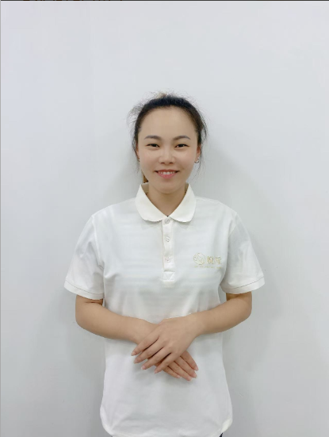
客户，您好！我是杨阿姨，本科毕业于重庆人文科技学院英语专业。在校期间一次性通过专业英语四级（优秀），并取得中学英语教师资格证、普通话二级甲等。 毕业后，我先在一家专升本教育机构担任英语教师，把复杂知识"讲得让孩子愿意听"这件事，我从那时起就在练。 后来加入马丁叔叔学习乐园担任主班教师，从小班一直带到毕业班，7 年里完整陪伴了 70 多名 2-6 岁孩子走过人生第一个"小社会"。 在这段日子里，我看到太多孩子本可以更好——有的错过了语言敏感期，有的没养成好习惯，有的吃得不讲究身体底子没打好。我越来越确信：0-6 岁那几年，比上什么兴趣班都重要。 因此我决定投身白班日间育儿陪伴，把这些年沉淀的英文启蒙、蒙氏理念、正面管教、辅食营养，一对一地给到一个家庭、一个孩子身上。 我的擅长：双语绘本共读、英文儿歌启蒙、儿童行为习惯引导、辅食添加（6 月龄起）、睡眠照料、出牙护理、洗澡抚触、感官探索游戏；懂大运动（抓握、撑坐、爬行），会用蒙氏方式保护孩子专注力；日常用简单英文和孩子沟通，把语言启蒙揉进吃饭、穿衣、玩耍里。 此外我也熟悉：手工、绘画、家庭营养餐、中式面点（包子、花卷、烧麦等），能根据宝宝发育节奏安排一日作息。 已育一个孩子。我的教育理念：寓教于乐，尊重孩子自身成长节奏，保护孩子的好奇心。用心做好日间陪护与启蒙，让家长安心省心。
照料 6 月龄宝宝，全天白班。
负责 2-6 岁幼儿日间陪伴与课程落地 7 年。
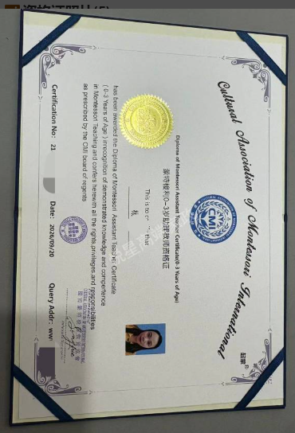
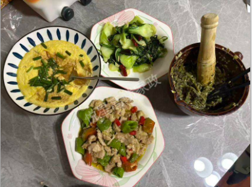
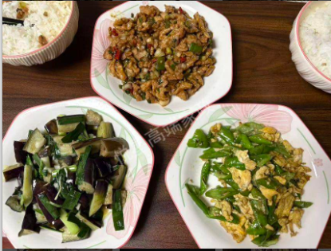
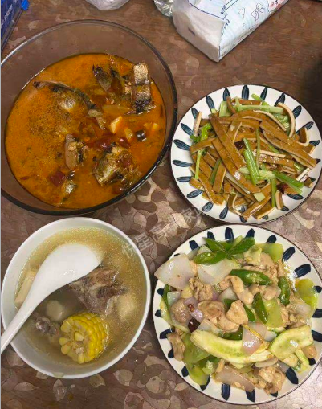
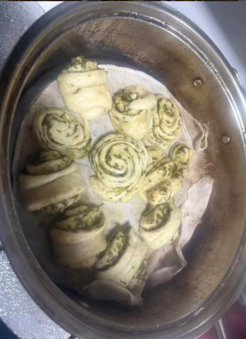
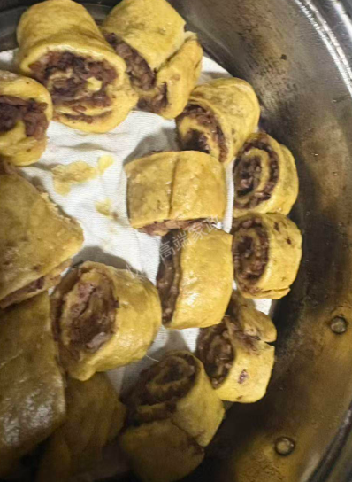
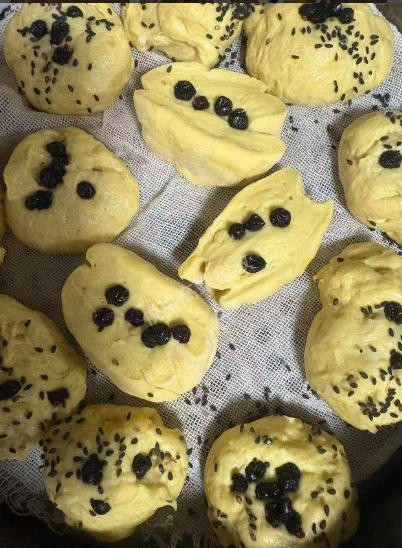
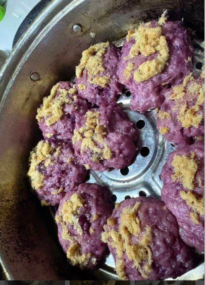
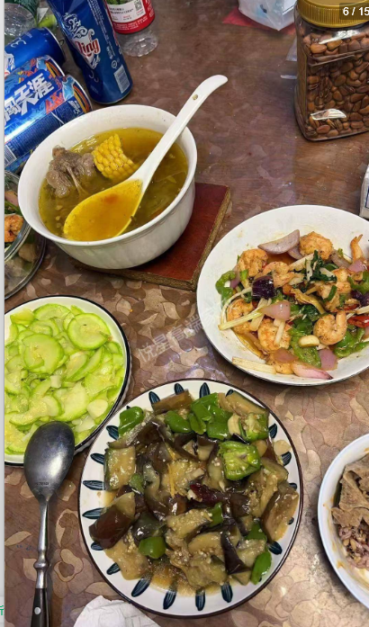
擅长中式面点（包子、花卷、馒头、烧麦、发糕）、川粤家常菜、宝宝辅食与营养搭配。
以下场景，都是家长找我最常见的原因 —— 也是我最擅长解决的。
除了幼儿园主班教学，我也持续陪伴 0-3 岁小月龄宝宝。把"陪"做成有质量的成长陪伴 —— 英文启蒙、感官探索、辅食添加、行为观察，日复一日。
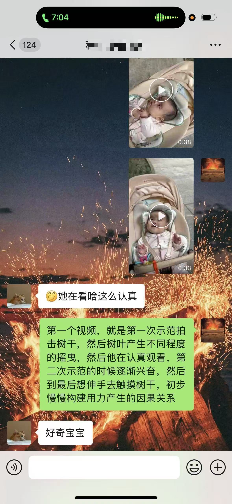
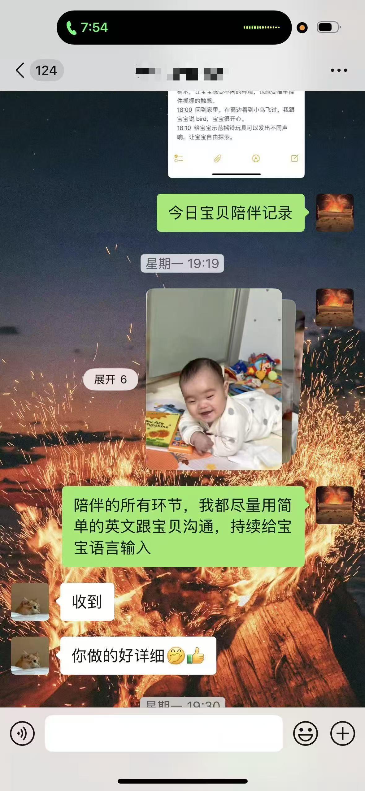
成都 · 程小玲草市街（化名）· 2026 年 6–9 月 · 全英文启蒙 + 成长陪伴期间真实评价
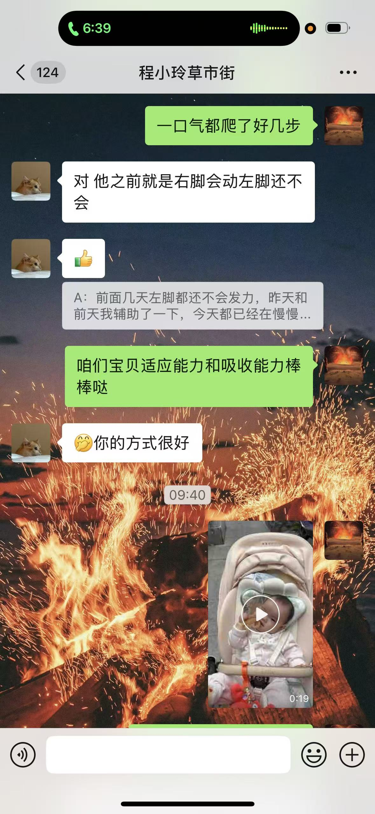
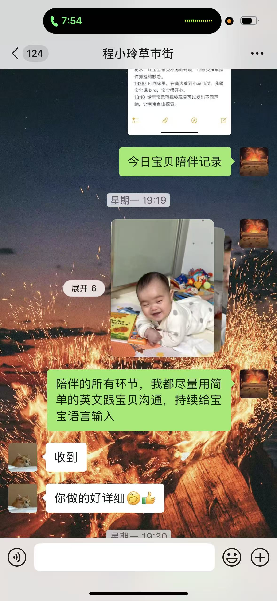
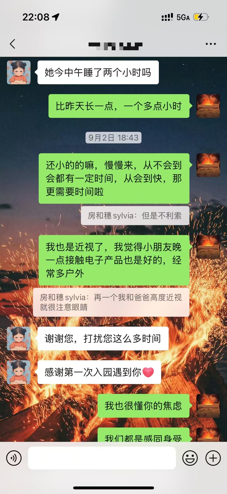
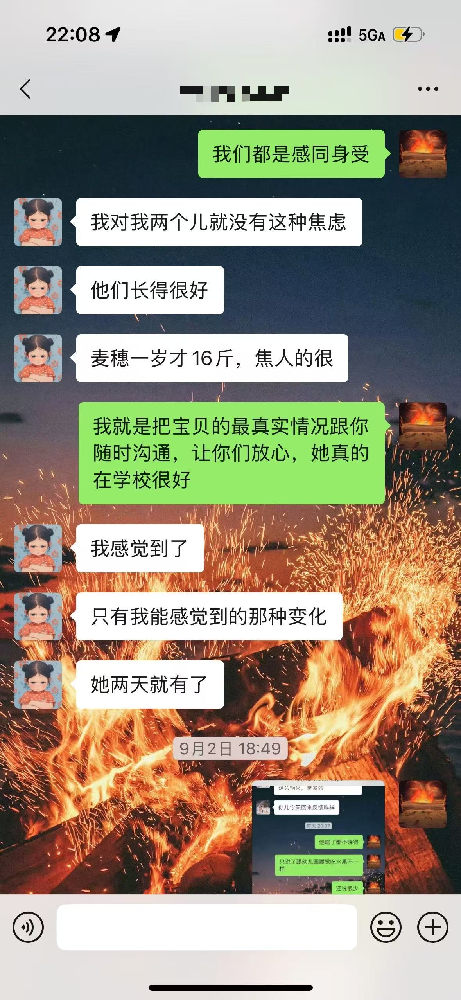
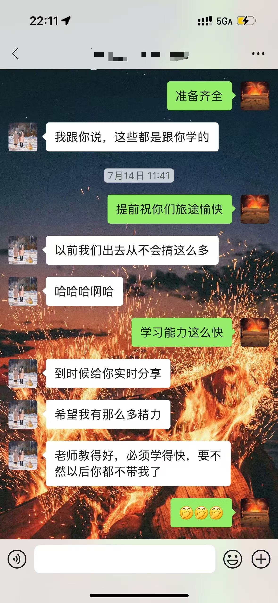
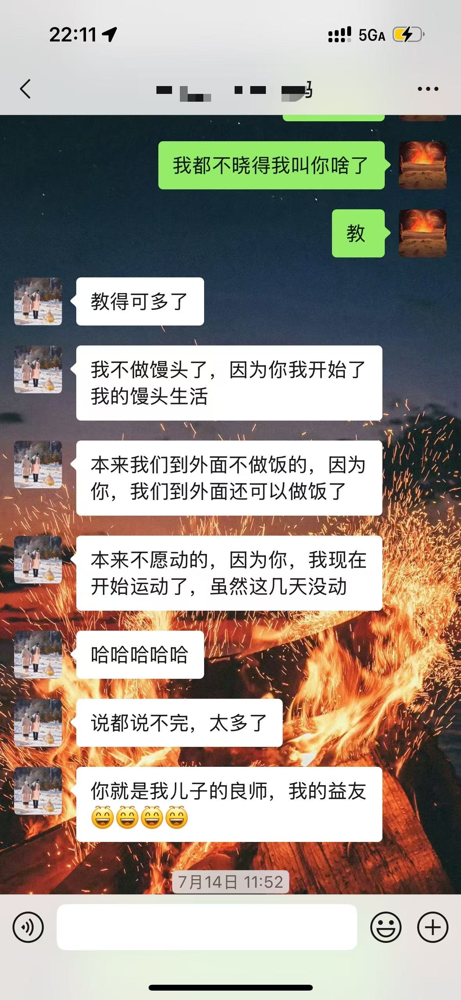
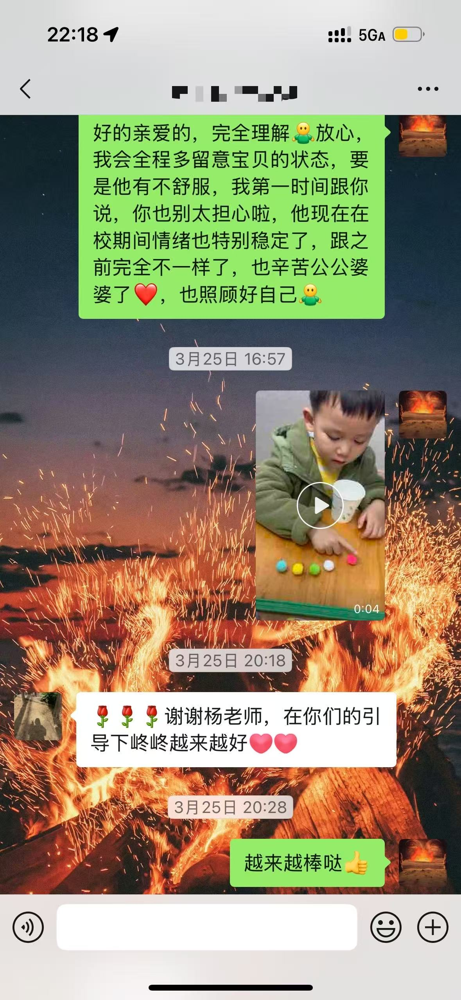